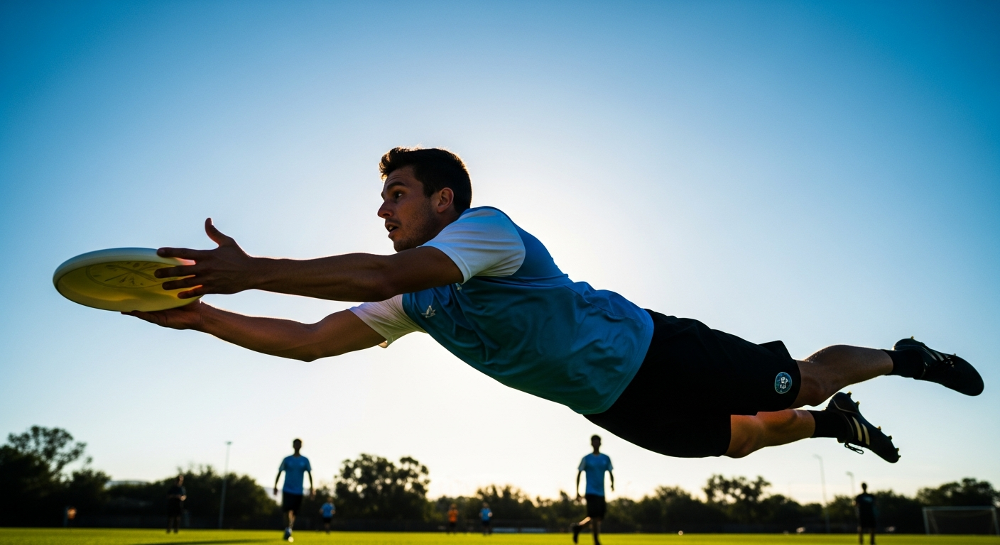
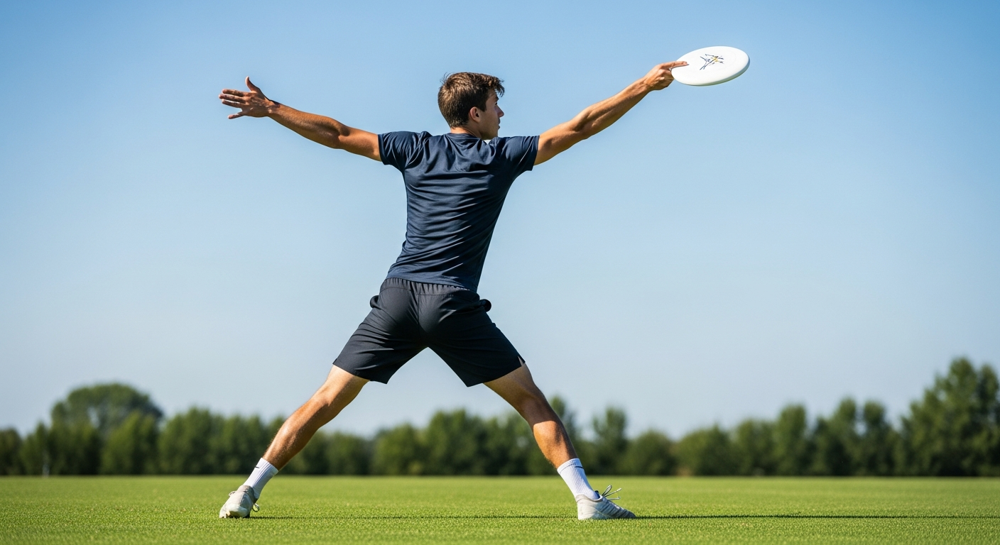
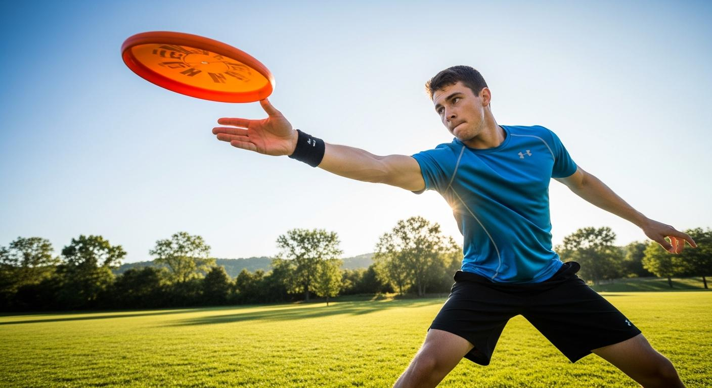
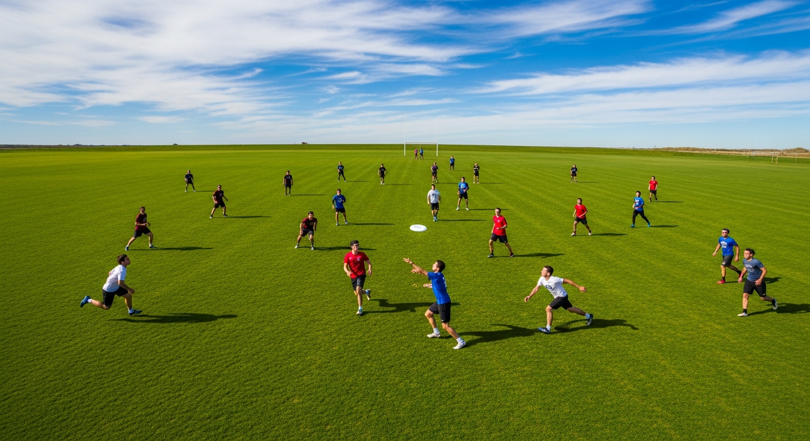
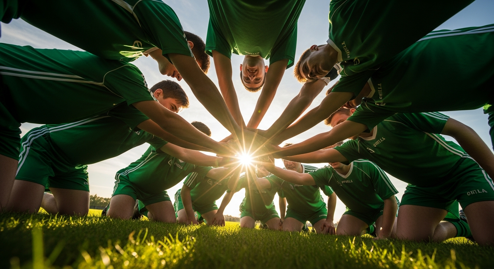

플라잉디스크란?
원반형 디스크를 패스하며 상대 엔드존에서 캐치하는 비접촉 팀 스포츠
- 1목표 — 디스크를 패스로 전진시켜 상대 엔드존에서 캐치하면 득점
- 2인원 — 한 팀 7명 (학교 수업: 5명으로 축소 가능)
- 3핵심 원칙 — 디스크를 들고 뛸 수 없다 (피벗풋만 사용)
비접촉 신체 접촉 금지
자율 심판 Spirit of the Game
남녀혼성 공식 종목

던지고, 받고, 달리는 — 심판 없이 선수의 정직함으로 완성되는 팀 스포츠. 얼티밋(Ultimate) 경기의 규칙, 기술, 전술을 배웁니다.
원반형 디스크를 패스하며 상대 엔드존에서 캐치하는 비접촉 팀 스포츠
"파이 접시"에서 시작된 세계적 스포츠
왜 "프리스비"가 아니라 "플라잉디스크"? — 'Frisbee'는 Wham-O사의 등록 상표이기 때문에, 공식 스포츠에서는 일반 명칭인 'Flying Disc'를 사용합니다.
올림픽을 향해 나아가는 플라잉디스크
세계플라잉디스크연맹 설립. 현재 80개국 이상 회원국 보유. IOC 정식 인정 국제경기연맹.
2015년 IOC 잠정 인정 스포츠. 2028 LA 올림픽 시범종목 추진 중. 아시안게임·유니버시아드 정식 종목.
대한플라잉디스크연맹(KFDF) 운영. 전국대회, 학교스포츠클럽 리그 등 활발히 활동.
얼티밋(팀 경기), 디스크골프, 거츠, 프리스타일 등 다양한 경기 형태로 발전.
얼티밋 필드의 주요 구역
얼티밋의 킥오프에 해당하는 동작
브릭(Brick) 규칙 — 풀이 경기장 밖으로 나가면 공격팀은 필드 중앙 브릭마크에서 시작 가능.
이런 상황이 되면 공격↔수비가 바뀝니다
패스를 받지 못하고 디스크가 땅에 떨어짐.
디스크가 경기장 밖으로 나감.
수비수가 공중에서 디스크를 가로챔.
10초 안에 디스크를 던지지 못함.
디스크를 상대에게 직접 건네줌.
수비수가 쳐내어 디스크가 떨어짐.
핵심! — 턴오버 발생 시 디스크가 떨어진 바로 그 지점에서 상대팀이 공격을 시작합니다.
플라잉디스크의 시간 제한과 반칙 규정
마크(수비수)가 3m 이내에서 "스톨링 1, 2, 3…10" 카운트. 10초 안에 패스해야 합니다.
던지는 동작 중 수비수가 몸에 접촉하면 파울.
피벗풋을 떼고 이동하거나 3보 이상 걸으면 반칙.
제3의 선수가 수비수의 이동 경로를 방해하면 반칙.
콜(Call) 시스템 — 파울을 당한 선수가 직접 "파울!" 선언 → 상대가 동의하면 규칙대로, 이의 제기 시 직전 상태로 되돌려 재개. 모든 판정은 선수 간 대화로 해결!
어떻게 점수를 내고 승부를 가를까?
상대 엔드존 안에서 디스크를 캐치하면 1점! 득점 후 득점팀이 풀(서브).
15점 먼저 달성 (세계대회). 캡 규정: 최대 17점.
한 팀이 8점 도달 시 진영을 교대하고 5분 휴식.
시간제(10분×2쿼터) 또는 5점 선취. 5:5 축소, 혼성팀 권장.

정확성과 거리 모두 우수한 기본 던지기
빠른 릴리스로 수비 타이밍을 뺏는 던지기

받는 기술과 응용 던지기
양손으로 디스크 위아래를 눌러 샌드위치처럼 잡기. 초보자에게 가장 안정적.
림 양쪽을 양손으로 잡기. 허리 위는 엄지↓, 허리 아래는 엄지↑이 원칙.
머리 위에서 포핸드 그립으로 내리치듯 던짐. 디스크가 뒤집히며 곡선 비행. 수비 머리 위를 넘길 때 사용.
다이빙으로 디스크를 잡는 기술. 얼티밋의 하이라이트! 가슴→배 순서로 슬라이딩 착지. 충분히 숙련 후 시도.

알면 경기가 달라지는 팀 전략
플라잉디스크를 특별하게 만드는 정신

부상 없이 즐기는 것이 가장 중요합니다
충분한 스트레칭 후 활동 시작. 특히 어깨·손목·발목 관절을 풀어준다.
디스크를 던지기 전 주변 사람을 반드시 확인. 얼굴 방향으로 강하게 던지지 않기.
신체 접촉이 일어나면 즉시 멈추고 양보. 최소 3m 간격 유지.
편한 운동화, 손톱 짧게, 충분한 수분 섭취. 잔디 미끄러움 주의.
배운 내용을 확인해 봅시다!
오늘 배운 핵심 내용을 정리합니다
① 디스크를 들고 달리기 금지 (피벗풋)
② 스톨 카운트 10초 이내 패스
③ 비접촉 원칙 (신체 접촉 금지)
④ 턴오버: 드롭·아웃·인터셉트 시 공수전환
① 백핸드 스로우 (기본 던지기)
② 포핸드/사이드암 스로우 (빠른 릴리스)
③ 팬케이크/클랩 캐치 (받기 기술)
④ 컷(Cut) 무빙 (빈 공간으로 달리기)
• 1940년대 예일대 학생들이 파이 접시를 던지며 시작
• IOC 정식 인정 국제경기연맹(WFDF) 소속
• 공식 대회에서 남녀혼성팀 의무
스포츠 과학 · 전술 분석 · 스포츠 심리 · 훈련 과학
디스크가 하늘을 나는 원리
항력 vs 양력 — 디스크 디자인(림 폭, 무게 분포)에 따라 양력/항력 비율이 달라진다. 얼티밋 디스크(175g)는 안정적 비행과 정확한 캐치를 위해 최적화된 설계이다.
얼티밋 경기가 신체에 미치는 생리적 효과
부상 프로파일 — 얼티밋의 주요 부상은 발목 염좌(방향 전환), 햄스트링 파열(스프린트), 어깨 탈구(레이아웃). 근력 훈련과 적절한 워밍업이 예방의 핵심이다.
공간 창출과 디스크 이동의 전략적 설계
턴오버 후 전환 — 공격에서 수비로 전환되는 "turn"의 순간이 가장 취약하다. 턴 직후 3초 이내에 수비 마크업을 완성하는 것이 실점을 방지하는 핵심이다.
바람과 수비를 극복하는 정밀한 스로잉
바람 보정 — 맞바람(headwind)에는 디스크를 낮게(hyzer), 뒷바람(tailwind)에는 높게(anhyzer) 던진다. 옆바람(crosswind)에는 바람 방향 반대쪽으로 각도를 기울여 보정한다.
심판 없이 경기하는 스포츠의 독특한 심리적 도전
Spirit Score — WFDF 공인 대회에서는 상대팀의 SOTG를 매 경기 후 5개 항목(지식, 파울, 공정성, 태도, 커뮤니케이션)으로 평가하여 "Spirit Award"를 수여한다.
FITT 원리 기반 얼티밋 특이적 훈련
빈도: 주 3회 | 강도: 최대
30~40m 반복 스프린트(20초 간격), 방향 전환 드릴, 가속-감속 훈련. 커팅과 딥 컷의 기반이 되는 스프린트 능력 향상.
빈도: 주 2~3회 | 강도: 1RM 65~80%
케이블 로테이션, 밴드 외회전/내회전, 플랭크 변형. 스로잉 파워와 레이아웃 시 어깨 안정성 강화.
빈도: 주 2회 | 시간: 20~25분
5-10-5 프로 애질리티, L-드릴, 미러 드릴. 커팅 시 첫 3보 가속력과 급방향 전환 능력이 핵심.
빈도: 주 3회 | 강도: HRmax 70~90%
파르틀렉(30초 스프린트+60초 조깅), 2km 인터벌, 30분 이상 지속 달리기. 70분 이상 경기를 버티는 유산소 기반.
스로잉 드릴 — 체력 훈련과 별도로 매일 15~20분의 스로잉 연습이 필수. 다양한 거리·각도·바람 조건에서 백핸드·포핸드·해머를 반복하여 기술을 자동화한다.
Spirit of the Game이 만드는 새로운 스포츠 문화
한국에서의 얼티밋 — 대한플라잉디스크연맹(KFDA) 주관으로 전국 대회가 개최되며, 대학 팀 문화가 특히 활발하다. 학교체육에서도 뉴스포츠 수업의 인기 종목이다.
턴오버와 스코어링 효율을 데이터로 분석하기
Spirit Score 분석 — 매 경기 후 상대팀으로부터 받는 Spirit Score를 누적 추적하여 팀의 스포츠맨십 수준을 정량화한다. 기술과 정신 모두를 성장시키는 것이 얼티밋의 목표이다.
고급 개념을 점검해 봅시다!
심화 학습의 핵심 내용을 정리합니다
① 양력(베르누이) + 자이로스코프 = 디스크 비행
② 받음각 5~15°가 최적, 초과 시 실속
③ 반복 스프린트 + 유산소(5~10km/경기)
④ 레이아웃의 어깨 부하와 낙법 중요
① 수직/수평 스택의 공간 활용
② 브레이크 사이드 스로로 수비 와해
③ SOTG: 자기 심판제의 도덕적 도전
④ 콜버그 도덕 발달과 갈등 해결 능력
① 턴오버 위치·유형 분류 분석
② 오펜스 효율(OPE) 50% 이상이 목표
③ 반복 스프린트+민첩성 중심 체력 훈련
④ Spirit Score로 스포츠맨십 정량화
플라잉디스크는 스포츠맨십을 몸으로 배우는 경기입니다.
심판 대신 서로에 대한 존중으로 경기가 만들어집니다.
THANK YOU!